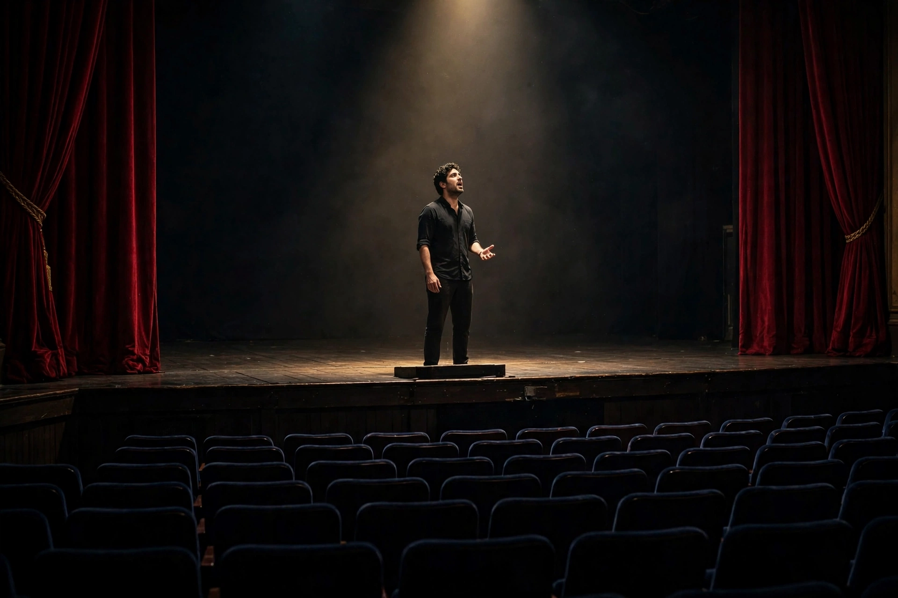

Monologue
In theatre, a monologue (from Greek: μονόλογος, from μόνος mónos, "alone, solitary" and λόγος lógos, "speech") is a speech presented by a single character, most often to express their thoughts aloud, though sometimes also to directly address another character or the audience. Monologues are distinguished from soliloquies, in which the character speaks to themself while alone on stage, and from asides, which are short comments directed only to the audience.

Forms
Interior monologue is a narrative technique in literature and drama in which a character's thoughts are presented directly, sometimes as a stream of consciousness. Dramatic monologue is a poetic form, perfected by Robert Browning in poems such as "My Last Duchess", in which a speaker addresses a silent listener and reveals their character through speech. In stand-up comedy and solo performance, monologues are the primary form; the stand-up monologue also opens many late-night television talk shows.
In theatre history
Monologues are prominent in classical Greek drama, in the set speeches of Shakespeare — where they serve to advance plot, reveal motivation and create intimacy with the audience — and in modern one-person plays such as Samuel Beckett's Krapp's Last Tape and Alan Bennett's Talking Heads monologues for television. Actors traditionally prepare a monologue for auditions.